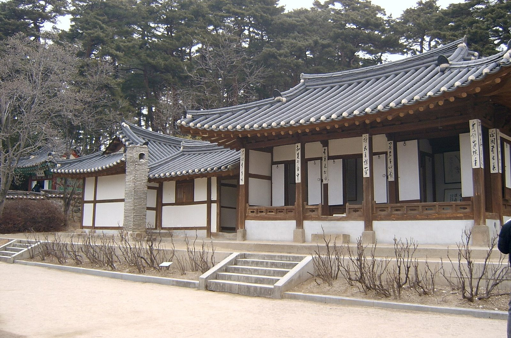

Photo: Klaus314 at English Wikipedia, Public domain, via Wikimedia Commons
Ojukheon, Gangneung: A Thoughtful Guide to Korea’s Historic House and Gardens
Published
At a glance: Ojukheon is a historic house and cultural complex associated with Shin Saimdang and her son, the scholar Yi I, also known as Yulgok. Its traditional buildings, black bamboo and museum displays offer a rewarding introduction to Gangneung’s history. Address: 24 Yulgok-ro 3139beon-gil, Gangneung, Gangwon-do. Google rating: 4.4/5 from 10,768 reviews at the time of this check; ratings and review counts can change.
Why visit Ojukheon?
Ojukheon is one of Gangneung’s best-known heritage sites, but it is more than a historic house. The grounds bring together traditional architecture, a garden setting and exhibits that help explain the people and ideas connected with the place. For visitors who want to understand more of Korea than its beaches and café culture, it offers an accessible way into the region’s history.
The site is closely associated with Shin Saimdang, a respected artist and calligrapher of the Joseon period, and her son Yi I, one of Korea’s most influential Confucian scholars. Both are remembered in Korean culture, and their portraits appear on South Korean banknotes: Shin Saimdang on the 50,000-won note and Yi I on the 5,000-won note. Seeing the place connected with their family gives a more tangible context to names visitors may already have encountered.
The name Ojukheon refers to the black bamboo that grows around the house. Look for it as you explore: the dark stems stand out against the greenery and traditional timber buildings, and help explain the site’s distinctive name.
What to see on the grounds
Take time to notice the old house itself. Its restrained wooden construction and tiled roof offer a contrast to the larger museum spaces, while the surrounding yard gives the buildings room to be appreciated from different angles. Rather than rushing straight from one display to the next, pause to look at details such as the rooflines, wooden frames and the relationship between the buildings and the garden.
Ojukheon’s cultural and museum facilities provide further background on the site and the historical figures associated with it. Exhibitions can make the visit more meaningful, especially if you are unfamiliar with Joseon-era history. Check the official website before your trip for current visitor information and any changes to exhibits or access.
There are also places of commemoration within the complex, including Munseongsa, a shrine associated with Yi I. These spaces are part of the site’s historical and cultural meaning, so approach them respectfully and follow any posted guidance. Even if you do not read Korean, the setting and arrangement of the buildings can help convey that this is a place of remembrance as well as a visitor attraction.
How to make the most of your visit
Allow roughly one to two hours if you would like to explore the outdoor grounds and spend time with the exhibits; visitors with a strong interest in Korean history may want longer. The experience involves walking between buildings, so comfortable shoes are a sensible choice. The grounds are outdoors as well as indoors, making the weather relevant: bring sun protection in bright conditions and suitable layers or rain protection when the forecast calls for it.
If you are visiting Gangneung with children, Ojukheon can be a useful cultural stop because the historic setting gives younger visitors something to explore visually, while the museum displays add context. You can keep the visit relaxed by focusing on the house, bamboo and a few exhibits rather than trying to absorb every detail.
For a richer visit, read a little about Shin Saimdang and Yi I before arriving. That background can help you distinguish the family’s history from the later cultural importance attached to them. If you prefer to explore independently, check whether the official site provides current visitor guidance or interpretive resources in a language you can use.
Good to know
- Address: 24 Yulgok-ro 3139beon-gil, Gangneung, Gangwon-do, South Korea. Use the Google Maps link below to navigate to the site.
- Opening hours and admission: These details can change. Confirm current hours, fees and any closures on Ojukheon’s official website before setting out.
- On-site etiquette: Follow signs about restricted areas and photography, particularly around commemorative or shrine spaces.
- Plan for both indoor and outdoor time: Exhibitions offer context, while the historic buildings and bamboo are best appreciated at an unhurried pace.
- Visitor feedback: The Google listing shows 4.4/5 based on 10,768 reviews at the time of this check. Treat this as a snapshot rather than a guarantee of any individual experience.
Useful links
FAQ
Who are Shin Saimdang and Yi I?
Shin Saimdang was a Joseon-era artist and calligrapher, and Yi I—also known as Yulgok—was her son and a prominent Confucian scholar. Ojukheon is closely associated with both.
How much time should I plan for Ojukheon?
About one to two hours is a reasonable starting point for the grounds and museum displays. Allow extra time if you want to read the exhibits carefully or explore at a slower pace.
Do I need to check anything before going?
Yes. Check the official website for current opening hours, admission information and any temporary changes before your visit.